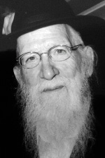

Forged in the Forests of War Torn France
The linchpin of the Reshet when it was first founded was R’ Aharon Mordechai Zilberstrom a”h who passed away on 17 Tammuz at the age of 89. * He was one of the pioneers of Chabad chinuch in Eretz Yisroel, who worked with astonishing intensity on behalf of the Reshet. * In a letter dated Adar 5725, t
The linchpin of the Reshet when it was first founded was R’ Aharon Mordechai Zilberstrom a”h who passed away on 17 Tammuz at the age of 89. * He was one of the pioneers of Chabad chinuch in Eretz Yisroel, who worked with astonishing intensity on behalf of the Reshet. * In a letter dated Adar 5725, the Rebbe lists the names of a few dynamic askanim as examples of diligent and effective people who did not need constant encouragement. R’ Zilberstrom was one of them.

Rabbi Aharon Mordechai Zilberstrom a”h was born on 27 Iyar 5683/1923 in Leipzig, Germany. His father was R’ Binyamin Nachum and his mother was Fradel. The family moved to France when he was a child where they lived before and during World War II.
In his youth, he learned in yeshivos in France and also learned in the famous Heide yeshiva near Antwerp. During the war, he joined a group of talmidim who lived and learned in the forests of France under the care of Rabbi Zalman Schneersohn of Paris. It was at this fateful time that he became close to Lubavitch, together with other talmidim who learned with him such as R’ Chaim Menachem Teichtel and R’ Dovid Moshe Lieberman, later rav of Antwerp.
At the end of the war, R’ Zalman Schneersohn started schools in France for Jewish orphans and R’ Zilberstrom, in his early twenties, was one of the directors.
The Rebbe went to Paris in 1947 to see his mother, Rebbetzin Chana, and to arrange for her emigration to the United States. The Rebbe spent three months in Paris and it was during this time that R’ Aharon Mordechai became one of his mekuravim. He even visited the Rebbe at his hotel and during these visits the Rebbe guided him in how to interact with the orphans under his care.
The Rebbe also visited the orphanages and years later, R’ Aharon Mordechai told about the visit:
“The orphanage was located near Paris, a half an hour’s trip by train. The talmidim sat in the shape of a Ches and the staff sat at a head table with refreshments that were hard to obtain at the time. The Rebbe tested the talmidim and answered a few questions that he was asked.
“The Rebbe then addressed the children. He began in Yiddish. After a few minutes, someone asked him to speak in French, since most of the children did not know Yiddish. I don’t remember whether the Rebbe said it could be translated afterward or he didn’t, but he continued speaking in Yiddish. He spoke about the Midrash which says, ‘our children will be our guarantors.’
“During the visit, the Rebbe conducted a tour of the building. Towards the end of the tour, the Rebbe spent twenty minutes alone in the shul that was on the ground floor.”
When the Rebbe’s visit to Paris came to a close, there was a farbrengen during which the Rebbe spoke about the names of each of the participants and explained them according to Kabbala and Chassidus. The first to get an explanation of his name was young Aharon Mordechai. The Rebbe explained that “Aharon” has the same letters as “nireh.” For the name “Mordechai” the Rebbe quoted the Gemara in Chulin (139b) that says, “Where do we see Mordechai in the Torah? It says mor dror which Targum translates as mira dachya.”
AN UTTER YEREI SHAMAYIM
After receiving the Rebbe Rayatz’s bracha, he moved to Eretz Yisroel where he was appointed menahel of the Shilo elementary school in Yerushalayim. Many of his talmidim today serve as distinguished rabbanim, including the current Gerrer Rebbe. He would report regularly to the Rebbe about his work.
A shidduch was suggested and after receiving a telegram with the Rebbe’s consent, he became engaged to Miriam Shpiegel. The wedding date was 13 Shevat, but after the couple heard of the passing of the Rebbe Rayatz on 10 Shevat, they asked the Rebbe what to do. The answer was to postpone the wedding until after the Shloshim. He married on 18 Adar.
He began writing regularly to R’ Chadakov who was the director of Merkos L’Inyanei Chinuch. It was on the margins of one of these letters that the Rebbe noted that R’ Zilberstrom is a “Yerei Shamayim B’Tachlis” (utterly G-d fearing). This was something that the Rebbe said about no other Chassid.
ONE OF THE FOUNDERS OF THE RESHET AND THE MENAHEL
R’ Zilberstrom ran the Shilo school during the 5711 school year and the following year. The Reshet Oholei Yosef Yitzchok was founded in 5712. All the founders were Chassidim who had moved to Eretz Yisroel from various places, and all of them lacked experience in running a school. They did not know how to get started. After much discussion, they decided to enlist R’ Zilberstrom to benefit from his educational experience.
R’ Zilberstrom agreed, even though it entailed a risk. He was leaving an established school in order to get new schools off the ground. He described his work in an interview with my friend, R’ Menachem Ziegelboim, which has not yet been published:
“We are talking about the period before the 5713 school year. I was in the middle of a shiur when R’ Chanzin came to me with a few other people. They had come to offer me a job in the Reshet. They were looking for someone with experience in both chinuch and administration, even if only on a small scale, although the job entailed administering a nationwide network of schools. I found out afterward that registration had already begun. In those days, registration had to be done door to door. The Reshet had legal registration forms and this was a big thing for them.”
The school year began, but numerous complicated problems arose that had to be resolved. R’ Zilberstrom sat for hours every day in the Reshet office on Rechov Kalish 40 in Tel Aviv, while R’ Chanzin took care of other Reshet matters, meetings, visits to schools and more, along with his rabbanus in Petach Tikva. When they needed to discuss matters together, R’ Zilberstrom would go to Petach Tikva to R’ Chanzin’s home. R’ Chanzin was a widower and he was raising five little children, which is why their meetings usually took place in his home. They started in the late evening, after the children went to sleep and sometimes ended with the light of day, as he related:
“I often went to his house when decisions needed to be made that I couldn’t make myself. I had responsibility for critical things and knew that a mistake could result in terrible consequences. I went to him and presented the questions. There was also the financial problem, which was the main issue in those days. I sat there, three nights a week, Sunday, Tuesday and Thursday, all night, and then we went to the mikva and for Shacharis and a new day began. I was exhausted but R’ Chanzin was just starting his day. When did he eat breakfast? Sometimes, it seemed to me that he ate yesterday’s breakfast…
“It was important to him that everything be done according to the letter of the law, so there would be no basis for anyone who wanted to interfere with the work of the Reshet. He would sit and write letters (there were no typewriters) to various officials.
“This went on for a year and a half, with me sitting with him all night. I didn’t see any signs of tiredness on him, but when he noticed that I was tired, he would tell me that if I continued working, I was liable to make mistakes (and he was afraid of giving excuses to the government officials to turn down requests for support etc.) and he said I should sleep.
“A few times, I stayed to sleep in his house in the room opposite his room and I would hear him say the bedtime Shma. He usually closed the door, but one time, he forgot to close the door and then I heard him. It was the Shma of a big Oveid Hashem, a Chassidishe Oveid. Each word that he said was measured and was said in a quiet niggun and great d’veikus. I never heard another Krias Shma like that in my entire life.”
R’ Zilberstrom’s job included meeting with the Minister of Education and other officials of the ministry, local mayors, principals of the Reshet schools, along with finding sources of funding. His son, R’ Yosef Yitzchok relates that when the Reshet was founded there was an urgent need for teachers and principals who were certified by the Education Ministry, but there were none amongst the Chassidim. So his father started a special course for the teachers in the Reshet, so they could earn certification from the Education Ministry. After a long period of study, they were given diplomas certifying them as teachers and were recognized by the Education Ministry.
AN IMPOSSIBLE JOB
During the early years, there were tremendous difficulties regarding salaries and budgets for buildings. Some of the teachers and principals of the Reshet, including R’ Zilberstrom, prayed for the day that they would get a steady salary so they could support their families in dignity. However, month after month the salaries did not arrive on time or they got small amounts. He had no choice but to work at an additional job as he related:
“I had not received a salary for a while, or else it was a paltry salary and you couldn’t live like that. This is why I began serving as the principal of the Reshet school in Malcha (then Monachat-Ir Ganim), where I got a set salary from the Education Ministry. I was absent every Wednesday when I had to wear my administrative hat for the Reshet and visit the various Reshet schools.”
R’ Zilberstrom was a high energy person and gifted with outstanding administrative abilities. Just as he threw himself into whatever he did, so did he demand this of those who worked for him.
His son relates:
“My father was completely devoted to running the schools. When he ran the school in Sedot Micha he would come home only once a week, so he wouldn’t waste time on traveling, which was much more arduous than it is today.”
It is hard to believe how one person managed to run the school in Malcha, in Sedot Micha, along with the general running of the Reshet.
CHABAD AND BRISK
After decades of running schools, R’ Zilberstrom finished his work. Despite the enormous investment and the endless giving, he did not consider giving himself a break. When he went to the Rebbe he asked about developing a special chinuch project, but the Rebbe told him he should be involved in hafatzas ha’maayanos. From then on, he gave daily shiurim in Chassidus to large audiences in Yerushalayim.
In these shiurim many people discovered what those close to him already knew, that he was a prodigious talmid chacham. He sometimes wrote articles for Torah journals.
Since his father’s family was from the town of Brisk, he was appointed by the Rebbe to maintain ties with the members of the famous Soloveitchik dynasty. Over the years, he kept in touch with these g’dolei Torah under the guidance of R’ Chadakov. Until his final years, he would meet with members of the Soloveitchik family and convey messages from Lubavitch.
FINAL DAYS
R’ Zilberstrom suffered from health problems and was hospitalized. He passed away on 17 Tammuz and was buried on Motzaei Shabbos.
He is survived by his wife Miriam, children Mrs. Esther Schochet – Toronto (wife of Dayan Rabbi Gershon Elisha Schochet); Rabbi Binyomin Nachum – menahel of Heichal Menachem and teacher in Toras Emes; Rabbi Tuvia – rav in Shikun Chabad Yerushalayim; Rabbi Yosef Yitzchok – askan in chinuch, Lud; Rabbi Chanoch Henoch – of Kfar Chabad, mashpia in Tomchei T’mimim in Rechovos; Rabbi Dovid – of Kfar Chabad, educator and nosei v’nosein in Tomchei T’mimim in B’nei Brak; Mrs. Chana Ginsburg – shlucha in Haifa.
SIMCHA ZILBERSTROM, MAY HASHEM AVENGE HIS BLOOD
In the massacre that took place in Kfar Chabad in 5716, a madrich and five students of the agricultural school were murdered. The madrich was R’ Aharon Mordechai Zilberstrom’s brother, Simcha.
Because communications weren’t as developed in those days, R’ Aharon Mordechai was not formally informed of the news, as his brother Eliyahu Peretz related in an interview with Mishpacha:
“I lived with my mother in Yerushalayim. Radios and telephones were not common and so we did not hear the news that night. My brother, Aharon Mordechai who did not live in our neighborhood, returned from an early morning davening and as he climbed the stairs to his apartment he came across a copy of HaAretz. He saw the headline which said, ‘Murderous Attack by Fedayeen in Kfar Chabad, Madrich Simcha Zilberstrom and Five Students Killed.’”
“I held on to the walls so as not to collapse on the floor,” said R’ Aharon Mordechai. “I went up to the house, had a hot drink, and got a hold of myself. After I got back to myself, I sent people to my mother with instructions to tell her the news in stages so she wouldn’t faint. Only then, did I head out for Kfar Chabad.
“When I arrived at the scene of the attack, police officers and United Nations officials surrounded the building and refused to allow me to enter. I accompanied the body to the Abu Kabir Forensic Institute to ensure that they would only do an external examination and issue the necessary certificates. Before I was about to leave, one of the pathologists said to me, ‘You should know that your brother threw himself in front of the murderers in order to protect the boys.’ I asked him how he knew this, and he took out a pen and paper and marked the places that my brother was hit and he explained, ‘According to the angle of the injuries, the bullets did not hit a person standing in front of the shooters but a person who was in motion throughout the shooting.’
“The next day the funeral left Shaarei Tzedek in Yerushalayim and was attended by thousands.”
A NEW NIGGUN
For Yud-Alef Nissan 5731/1971, nobody thought to fit words from the Rebbe’s new chapter of T’hillim to a tune, as is done today. Towards the end of Tishrei 5732, R’ Zilberstrom brought a tune that fit the words, “Yasisu V’Yismichu.” It was a tune that is known today as the niggun for Yechi Adoneinu. This paved the way for fitting a tune to words in the Rebbe’s new perek every year.
This is what happened, as related by R’ Zilberstrom:
“The mashpia, R’ Yehoshua Lipkin fit the niggun to p’sukim in the perek. Since the tune was known and sung by frum people, and people of many different frum backgrounds would attend farbrengens, the mashpia considered it hafatzas Chassidus Chabad. In the summer of 5731, at every farbrengen which R’ Lipkin attended, they would sing this niggun with the p’sukim from the Rebbe’s perek.
I went to the Rebbe for the second half of Tishrei 5732. Towards the end of the Simchas Torah farbrengen, I went over to R’ Tzvi Hirsh (Heishke) Gansbourg and told him that I had a new niggun from Yerushalayim for the Rebbe’s kapitel and asked him to sing it. He said it was too late and there was no time to sing it.
After Maariv the Rebbe gave out Kos shel bracha. I went over to Chazan Moshe Teleshevsky and asked for his help. R’ Moshe began singing it and slowly, the people around him caught on and joined in.
The Rebbe suddenly turned to him (I was standing next to him), looked at him, and then put the cup down on the table and began encouraging the singing with movements of both his hands. He also did this as the wine distribution continued. Of course, everybody joined in enthusiastically. They started singing the niggun at farbrengens until the following Yud-Alef Nissan. For the next birthday, it was obvious that a niggun had to be found for the new kapitel and everyone wanted this z’chus. For this perek (71), four niggunim were composed.
This story was recorded by his grandson, R’ Menachem Mendel Zilberstrom.
A REAL “KOCH” IN MOSHIACH
For the past twenty years, R’ Zilberstrom would visit Haifa for Pesach to be with his daughter, son-in-law and grandchildren who are shluchim there. Throughout his visits he was very active and would go from shul to shul, whether on Yom Tov or Chol HaMoed, and lecture about the holiday, the Rebbe and the imminent Geula. He would urge people to make seudos Moshiach and would talk about their importance and the need for emuna and anticipation of the immediate coming of Moshiach.
Every year, he would farbreng the night of Shvii shel Pesach with a crowd of bachurim and Anash at the Ginsberg home, and would speak animatedly about the importance of seudas Moshiach and the need to publicize to all that we have the Rebbe and he will redeem us. Most of the time, the farbrengens would end with a fiery Yechi dance.
Even in later years, when his health was poor, he would go at least for the last days of Yom Tov in order to attend the many seudos Moshiach that took place in the area.
During his visits to Haifa, he would regularly lecture at the Kinus Torah that took place in the central Chabad shul. One year, the gabbaim decided to show a video of the Rebbe at the end of the Kinus. It was the video of Chaf-Ches Nissan 5751.
Someone who was there said: I remember R’ Zilberstrom sitting and watching the video, his eyes slowly filling with tears. At the end of the video, I saw him sitting and crying. I went over to him and tried to calm him down, but he was adamant. Ad Mosai? The Rebbe demands that we do something. What are we actually doing? Did we do enough? Why hasn’t he come yet?
Shneur Zalman Berger. "Forged in the Forests of War Torn France." Beis Moshiach, no. 849 (September 6, 2012).